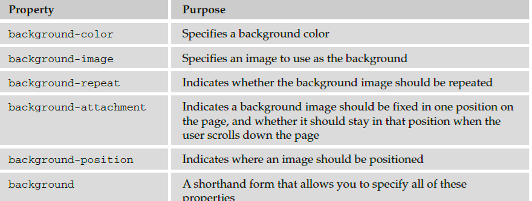
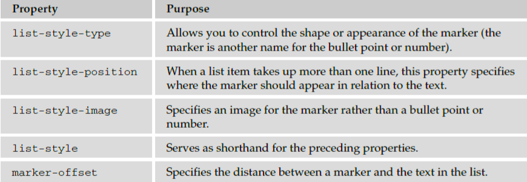
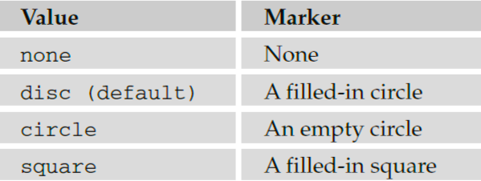
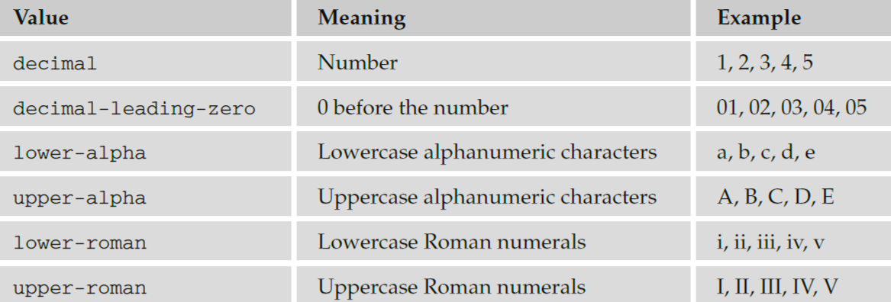

Backgrounds
As you saw in the last chapter, CSS treats each element as if it were its own box. You can control the
background of these boxes using the following properties (when used on the < body > element they affect
the entire browser window).

The background - color Property
The background - color property allows you to specify a single solid color for the background of
any element.
When the background - color property is set for the < body > element, it affects the whole document,
and when it is used on any other element it will use the specified color inside the border of the box
created for that element.
The value of this property can be a color name, a hex code, or an RGB value (colors are covered in
greater depth in Appendix D). For example ( ch08_eg02.css ):
body {background-color:#cccccc; color:#000000;}
b {background-color:#FF0000; color:#FFFFFF;}
p {background-color: rgb(255,255,255);}
The background - image Property
As its name suggests, the background - image property enables you to add an image to the background
of any box in CSS. This can be very useful in many situations, from adding a subtle texture or shading to
adding a distinctive design to the back of elements or entire pages.
The value for this property should start with the letters url , followed by the URL for the image in
brackets and quotes like so:
body {background-image: url(“images/background.gif”);}
If both a background - image property and the background - color property are used, then the
background - image property takes precedence. It is good practice to supply a background - color
property with a background image and give it a value similar to the main color in the background image
because the page will use this color while the background image is loading or if it cannot display the
image for any reason.
Here is an example of using a single background image, which is 200 pixels wide and 150 pixels high. By
default, this image is repeated all across the page ( ch08_eg03.css ). The background - color property
is set to be the same color as the background of the image (just in case the image cannot be loaded):
body {
background-image: url(“images/background.gif”);
background-color: #cccccc;}
Lists
Back in Chapter 1, you learned how to use the < ul > and < li > elements to create lists with bullet points
(also known as unordered lists) and the < ol > and < li > elements to create numbered (or ordered) lists.
In this section you will learn about the CSS properties you can use to control lists.

The list - style - type Property
The list - style - type property allows you to control the shape or style of bullet point (also known as a
marker ) in the case of unordered lists and the style of numbering characters in ordered lists.
The table that follows shows the standard styles for an unordered list.

The table that follows shows values for ordered lists that are supported in most browsers.

The list - style - type property can either be used on the < ul > and < ol > elements (in which case it
applies to the entire list) or on the individual < li > elements. The following example demonstrates all
these styles:
li.a {list-style-type:none;}
li.b {list-style-type:disc;}
li.c {list-style-type:circle;}
li.d {list-style-type:square;}
li.e {list-style-type:decimal;}
li.f {list-style-type:lower-alpha;}
li.g {list-style-type:upper-alpha;}
li.h {list-style-type:lower-roman;}
li.i {list-style-type:upper-roman;}